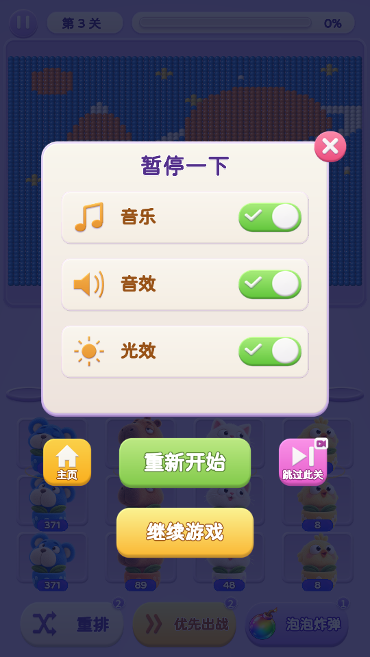
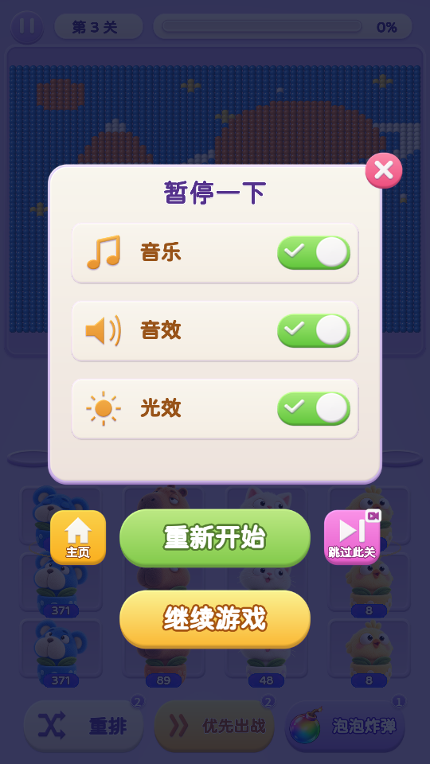

<!doctype html>
<html lang="zh-CN">
<meta charset="utf-8">
<meta name="viewport" content="width=device-width, initial-scale=1">
<title>暂停按钮 · 历史素材复用</title>
<style>
*{box-sizing:border-box}body{margin:0;background:#eee8f5;color:#493167;font-family:system-ui,-apple-system,sans-serif}main{max-width:1160px;margin:auto;padding:28px 24px}h1{font-size:24px;margin:0 0 8px}p{margin:0 0 22px;color:#78658b;font-size:14px}.pair{display:grid;grid-template-columns:1fr 1fr;gap:24px}figure{margin:0;min-width:0}figcaption{margin:0 0 12px;font-weight:700;font-size:17px}img{display:block;width:100%;height:auto;border-radius:12px;box-shadow:0 6px 22px #45315522}a{display:block;text-decoration:none;color:inherit}.note{font-size:13px;color:#78658b;margin-top:10px}@media(min-width:1000px){main{max-width:1000px}.pair{gap:36px}}@media(max-width:600px){main{padding:18px 12px}.pair{gap:12px}figcaption{font-size:14px}h1{font-size:20px}}
</style>
<main>
<h1>暂停按钮 · 历史素材复用</h1>
<p>继续按钮直接使用历史金色胶囊素材；重开按钮采用相同造型，保留绿色配色。</p>
<div class="pair">
<figure><figcaption>调整前</figcaption><a href="before.png" target="_blank"></a><div class="note">上一版：圆角矩形</div></figure>
<figure><figcaption>调整后</figcaption><a href="evidence/standard-pause.png" target="_blank"></a><div class="note">历史胶囊造型 · 原薄底边与高光 · 圆润描边文字</div></figure>
</div>
</main>
</html>
